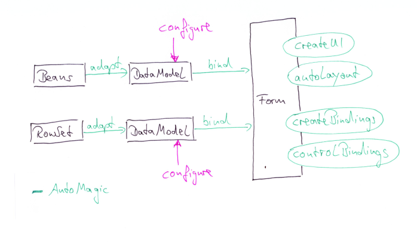
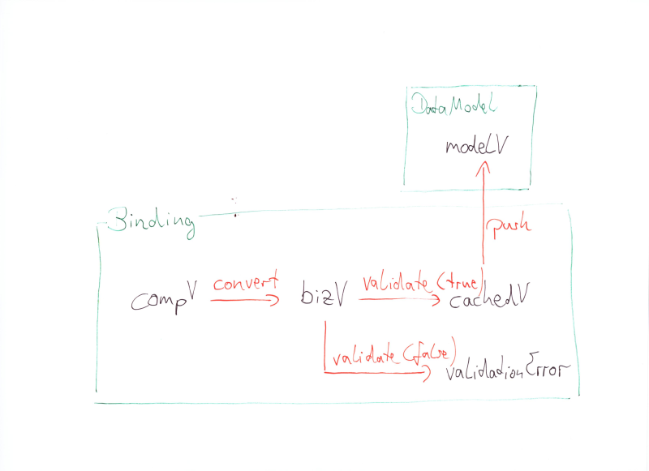
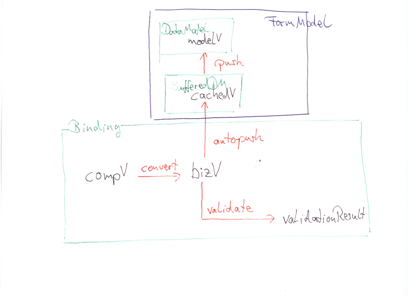

Binding
The Process
The task is to present data contained in arbitrary data structures in
rich client user interfaces, thus "binding" data to front-end widgets.
The first step is to adapt the data structure to a common model
interface, DataModel. This allows uniform access to all properties of
the model, irrespective of the original nature of the data. Further
configuration/customizing/control hooking is done on this uniform model
level. After configuration the model is passed over to a Form which
"automagically" creates and wires all participants of a visual
representation. If refined configuration is unnecessary - the Form can
auto-adapt simple data structures.

Configure the DataModel
The per-value MetaData are the most obvious thing to configure: they
drive many aspects of the UI to build and control - they range from
visual rendering hints (display name, display width) to presentation
logic (editability, choice lists). They are initialized when
adapting the data structure to reasonable defaults, but are meant to be
changed/configured to the needs of the particular presentation if
appropriate.
Another aspect to configure is the set of fields of a model: it's the
place to add derived/computed fields. A common approach to implement
this is to create adapter chains (PENDING: need example!)
Form's Tasks
The Form (PENDING: introduce FormModel or PresentationModel) is the
central place to collect everything for presenting a "screenful"
of bound widgets.
- factory for all contained widgets (internally delegates to a
pluggable Form-/ComponentFactory). Will derive the type of component
from MetaData.
- (optional) auto-layout of widgets - layout/rendering hints can be
transported via MetaData
- factory for Bindings between component and DataModel (most of the
time it will be a single value of the model) - internally delegates to
a pluggable BindingFactory. The Binding will take care to synch the
"data-near" widget state from the MetaData
- control synchronization between Binding and DataModel. This
includes validation (DataModel level). The (current) default behaviour
is "screen-level" synchronization (== push values back to the DataModel
on explicit user interaction). Must provide field-level and
keyEvent-level synch as well.
Note that it is designed to handle an arbitrary number of incoming
DataModels.
By-pass the Form
Developers are free to not use a Form as their UI-container. In that
case they have to take over all of the Form's responsibilities: besides
UI-/Binding creation and configuration they must take care of
synchronization/validation control across all contained DataModels.
Responsibilities of the Binding class
The current state:
- Basically: synchronize component value and "an element" of a
DataModel
- implicit to synchronization is the task of conversion between
component value type and model value type
- validate the converted value
- report validation errors
- Buffering the converted model value type until an explicit push
request. The buffering will be done only if the validation was
successful..
Multiplicities
The current state is 1 : 1 to a metaData/value pair of a DataModel
(API). Further suggestions include
- 1 : 1 to a DataModel (Richard's pet request for "navigational" UI
components like JList, JTable...)
- 1 : * to several metaData/value pairs of a (or several?)
DataModel - example: bind both the drop-down list and the selection of
a comboBox to fields in the model(s)
- 1 : * to rows (one field?) of a explicitly 2-dimensional
DataModel (Hans' multiple selection) - example: number field for
statistical average
- * : 1 to a value with different metaData (Hans again :-) -
example: different converters for different component types
Buffering (simple fields)
My hinch is that letting the Binding care about buffering (or caching)
values is at the root of some hard binding woes (related to issue
#128). The values at the different steps are:
- compV: the value as represented and typed by the component
- bizV: the value converted to the business type. Validation works
in the "business type space"
- cachedV: the converted and successfully validated value stored
for later usage in a push operation
- modelV: the value after beining pushed to the DataModel.

The problem with this approach is: The only legal way to access a field
of a DataModel is through model.getValue(). This will return a changed
value only after a push(). Consequently DataModel-level (form-level,
multifield) validation is possible only after pushing all values -
leading to an invalid model if the validation fails.
Very raw thoughts (done nothing to verify/explore yet): An alternative
would be to keep the Binding dumb. Might be possible to look at it as
near to the view - because it's acting mostly on the view's behalf -
that could be regarded as part of the view realm in a
Domain/PresentationModel/View universe (as in M. Fowler's articles
about patterns
in rich client user interfaces). Buffering would be moved to a
BufferedDataModel (analogous to JGoodies), the (yet to define)
formModel would be responsible for deciding about buffering and
wrapping an incoming model into a buffered one and hand that to the
Binding, Bindings will always pass through all changes.

The "FormModel" (name's open to discussion) would have a property
bufferEnabled and wrap any models accordingly (or not). The Binding now
is unaware of the notion of buffering - form gives them a reference to
the bufferedDM. This naturally enables a per-field synchronization
(currently we have per-form synchronization that can be tricked into
per-field behaviour). All the gory details would be hidden in the
form/model (acting as a kind of "PresentationModel").
How/where/when to handle validation in such a scenario? The Form/Model
will ask all bindings for their validationResult(s), if all are clean
the model's validators will be run on the the bufferedDM and only if
those succeed the cached values will be written to the "real" dataModel.
Buffering (collection-like structures)
nothing yet... would probably require a deep-clone. Or wrapping every
row as a bufferedDM?
The JGoodies' approach
DataModel is similar in intention to goodies
BeanAdapter - it provides uniform access to all known fields. DataModel
is dissimilar in having
MetaData for all its fields. The (yet to be defined) FormModel is
similar to PresentationModel - holds DataModels and buffering state.
It's notifying via PropertyChangeEvents - they take a heavier burden
compared to ValueChangeEvents because they carry source, oldValue,
newValue. Listeners can take the newValue without any need to resort to
the source. Adapting ValueChangeEvents to PropertyChangeEvents (that's
a possible use scenario of goodies binding) is problematic because a
ValueChangeEvent has not notion of "oldValue" and there is no way to
get it from the sender.